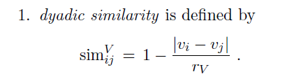
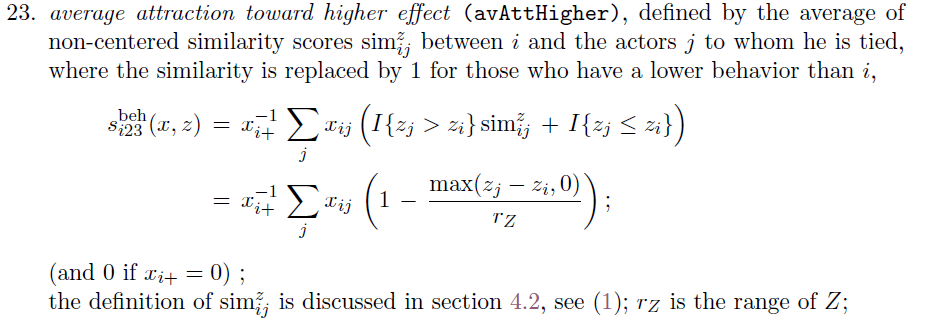
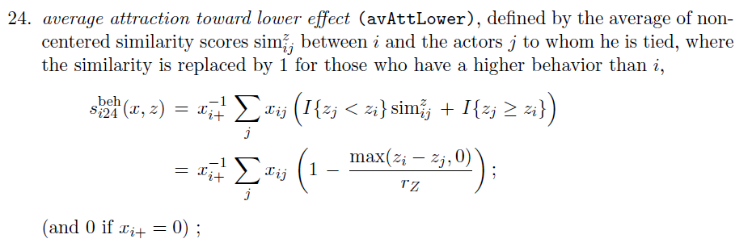
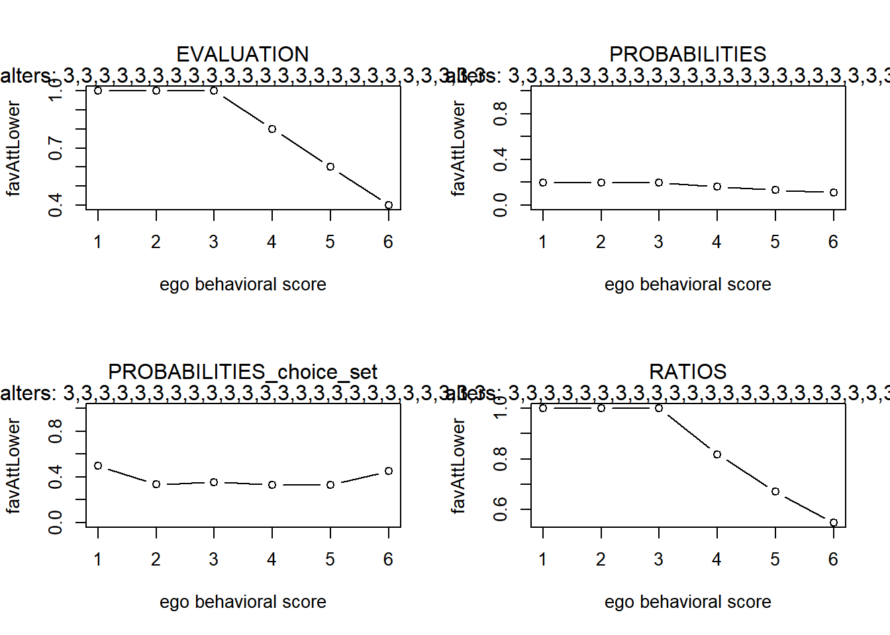
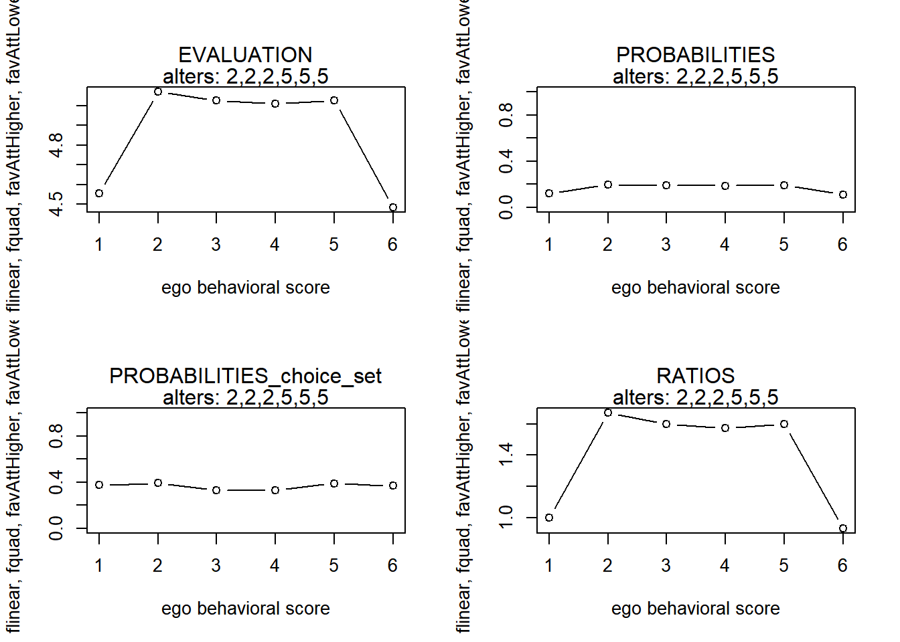
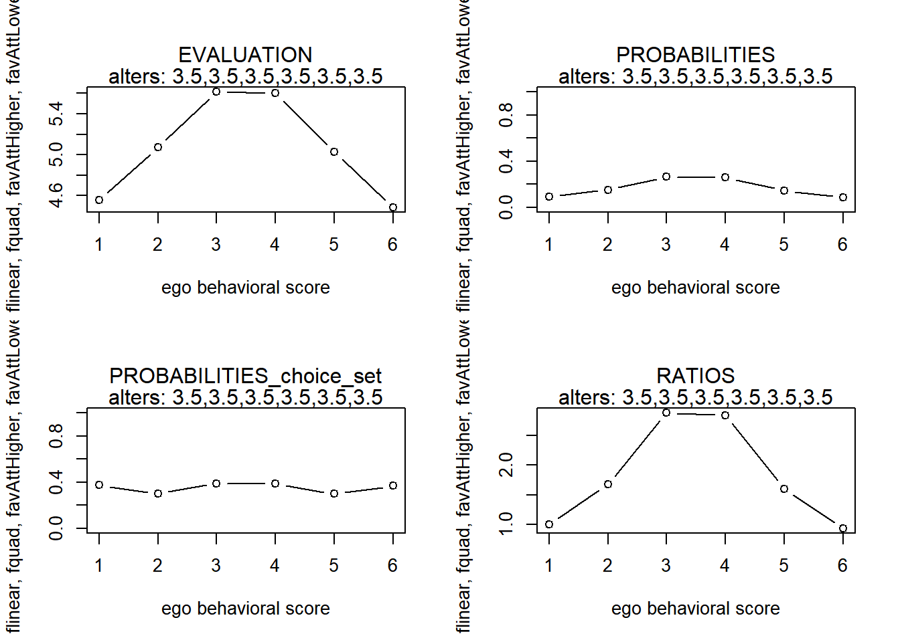

Strava paper
Last compiled on december, 2021
We will show how the influence statistics in RSiena behave.
We assume that ego is connected to all alters.
functions
center behavioral variables
fcentring <- function(actors) {
centored <- actors - mean(actors)
return(centored)
}calculate the similarity scores

dyadic similarity (RSiena manual, p28)
fsimij <- function(actors, min, max) {
# rv <- max(actors) - min(actors)
rv <- max - min
mat1 <- matrix(actors, nrow = length(actors), ncol = length(actors), byrow = TRUE)
mat2 <- t(mat1)
simij <- 1 - (abs(mat1 - mat2)/rv)
return(simij)
}fsimij(1:6, 1, 6)#> [,1] [,2] [,3] [,4] [,5] [,6]
#> [1,] 1.0 0.8 0.6 0.4 0.2 0.0
#> [2,] 0.8 1.0 0.8 0.6 0.4 0.2
#> [3,] 0.6 0.8 1.0 0.8 0.6 0.4
#> [4,] 0.4 0.6 0.8 1.0 0.8 0.6
#> [5,] 0.2 0.4 0.6 0.8 1.0 0.8
#> [6,] 0.0 0.2 0.4 0.6 0.8 1.0linear
flinear <- function(ego, alters, ...) {
actors <- c(ego, alters) #define the network
beh_centered <- fcentring(actors) #center behavior scores
statistic <- beh_centered[1] #the actual statistic
return(statistic)
}quad
fquad <- function(ego, alters, ...) {
actors <- c(ego, alters) #define the network
beh_centered <- fcentring(actors) #center behavior scores
statistic <- (beh_centered[1])^2 #the actual statistic
return(statistic)
}avSim

avSim (RSiena manual, p174)
favSim <- function(ego, alters, min, max) {
actors <- c(ego, alters) #define the network
beh_centered <- fcentring(actors) #center behavior scores
simij <- fsimij(beh_centered, min, max) #calculate the similarity scores
diag(simij) <- NA
msimij <- mean(simij, na.rm = TRUE) #calculate the mean similarity score. only calculate mean on non-diagonal cells??!!
simij_c <- simij - msimij #center the similarity scores
statistic <- sum(simij_c[1, ], na.rm = TRUE)/length(alters) #the actual statistic
return(statistic)
}favSim2 <- function(ego, alters, min, max) {
actors <- c(ego, alters) #define the network
beh_centered <- fcentring(actors) #center behavior scores
simij <- fsimij(beh_centered, min, max) #calculate the similarity scores
diag(simij) <- NA
# msimij <- mean(simij, na.rm=TRUE) #calculate the mean similarity score. only calculate mean on
# non-diagonal cells??!!
simij_c <- simij # - msimij #center the similarity scores
statistic <- sum(simij_c[1, ], na.rm = TRUE)/length(alters) #the actual statistic
return(statistic)
}avAttHigher

avAttHigher (RSiena manual, p176)
favAttHigher <- function(ego, alters, min, max) {
actors <- c(ego, alters)
beh_centered <- fcentring(actors)
simij <- fsimij(beh_centered, min, max)
diag(simij) <- NA
# msimij <- mean(simij, na.rm=TRUE) #only calculate mean on non-diagonal cells??!! simij_c <- simij -
# msimij diag(simij_c) <- NA
simijH <- simij[1, ]
simijH[beh_centered <= beh_centered[1]] <- 1
simijH[1] <- NA
statistic <- sum(simijH, na.rm = TRUE)/length(alters)
return(statistic)
}avAttLower

avAttLower (RSiena manual, p176)
favAttLower <- function(ego, alters, min, max) {
actors <- c(ego, alters)
beh_centered <- fcentring(actors)
simij <- fsimij(beh_centered, min, max)
diag(simij) <- NA
simijL <- simij[1, ]
simijL[beh_centered >= beh_centered[1]] <- 1
simijL[1] <- NA
statistic <- sum(simijL, na.rm = TRUE)/length(alters)
return(statistic)
}avAlt

avAlt (RSiena manual, p177)
favAlt <- function(ego, alters, ...) {
actors <- c(ego, alters)
beh_centered <- fcentring(actors)
statistic <- beh_centered[1] * (sum(beh_centered[-1], na.rm = TRUE)/length(alters))
return(statistic)
}fAttMean
We are attracted to the mean of our alters!
(behaves approximately similar to avAlt, different shape.)
\[ s^{beh}_{i}(x,z) = 1 - \frac{\lvert(z_i - x^{-1}_{i+}\sum_j x_{ij}z_j)\rvert}{r_Z} \]
fAttMean <- function(ego, alters, min, max, ...) {
rv <- max - min
actors <- c(ego, alters)
beh_centered <- fcentring(actors)
statistic <- 1 - abs(beh_centered[1] - (sum(beh_centered[-1], na.rm = TRUE)/length(alters)))/rv #thus we strive for a highest local similarity score!
return(statistic)
}make plot of statistic values
finluenceplot <- function(alters, min, max, fun, params, results = TRUE, plot = TRUE) {
# check correct number of parameters are given
if (length(fun) != length(params))
stop("Please provide one (and only one) parameter for each of the behavioral effects!")
# calculuate value of evaluation function
s <- NA
for (i in min:max) {
s[i] <- 0
for (j in 1:length(fun)) {
s[i] <- s[i] + params[j] * fun[[j]](i, alters, min, max)
}
}
# calculate the probabilities
p <- NA
for (i in min:max) {
p[i] <- exp(s[i])/sum(exp(s))
}
# calculate the probabilities of choice set
p2 <- NA
for (i in min:max) {
if (i == min) {
p2[i] <- exp(s[i])/sum(exp(s[i]) + exp(s[i + 1]))
} else if (i == max) {
p2[i] <- exp(s[i])/sum(exp(s[i]) + exp(s[i - 1]))
} else {
p2[i] <- exp(s[i])/sum(exp(s[i]) + exp(s[i - 1]) + exp(s[i + 1]))
}
}
# calculate the probability ratio
r <- NA
for (i in min:max) {
r[i] <- p[i]/p[1]
}
# some simple plots
if (plot) {
name <- deparse(substitute(fun))
name <- stringr::str_sub(as.character(name), 6, -2)
par(mfrow = c(2, 2))
plot(y = s, x = min:max, xlab = "ego behavioral score", ylab = name, type = "b")
mtext("EVALUATION", line = 1)
mtext(paste("alters:", paste0(alters, collapse = ",")))
plot(y = p, x = min:max, xlab = "ego behavioral score", ylab = name, ylim = c(0, 1), type = "b")
mtext("PROBABILITIES", line = 1)
mtext(paste("alters:", paste0(alters, collapse = ",")))
plot(y = p2, x = min:max, xlab = "ego behavioral score", ylab = name, ylim = c(0, 1), type = "b")
mtext("PROBABILITIES_choice_set", line = 1)
mtext(paste("alters:", paste0(alters, collapse = ",")))
plot(y = r, x = min:max, xlab = "ego behavioral score", ylab = name, type = "b")
mtext("RATIOS", line = 1)
mtext(paste("alters:", paste0(alters, collapse = ",")))
}
# return results for more fancy plotting
if (results) {
x <- min:max
df <- data.frame(x, s, p, p2, r)
return(df)
}
}examples
alters1 <- rep(c(3, 3, 3, 3, 3, 3), 4)
finluenceplot(alters = alters1, min = 1, max = 6, list(flinear, fquad), params = c(0.1, -1))
finluenceplot(alters = alters1, min = 1, max = 6, list(favSim), params = c(1))
finluenceplot(alters = alters1, min = 1, max = 6, list(favAlt), params = c(1))
finluenceplot(alters = alters1, min = 1, max = 6, list(fAttMean), params = c(1))
finluenceplot(alters = alters1, min = 1, max = 6, list(favAttHigher), params = c(1))
finluenceplot(alters = alters1, min = 1, max = 6, list(favAttLower), params = c(1))
finluenceplot(alters = alters1, min = 1, max = 6, fun = list(favAttLower, favAttHigher), params = c(1,
1))
finluenceplot(alters = alters1, min = 1, max = 6, list(fAttMean, favAttHigher), params = c(1, 1))
#> x s p p2 r
#> 1 1 -3.8784 0.0111755430 0.05412573 1.00000000
#> 2 2 -1.0176 0.1952982210 0.26152200 17.47550175
#> 3 3 0.0000 0.5403017224 0.55573044 48.34679828
#> 4 4 -0.8256 0.2366370964 0.29827724 21.17455024
#> 5 5 -3.4944 0.0164073225 0.06479358 1.46814544
#> 6 6 -8.0064 0.0001800947 0.01085731 0.01611508
#> x s p p2 r
#> 1 1 -0.368 0.1496825 0.4541293 1.0000000
#> 2 2 -0.184 0.1799207 0.3296031 1.2020158
#> 3 3 0.000 0.2162675 0.3753935 1.4448420
#> 4 4 -0.184 0.1799207 0.3296031 1.2020158
#> 5 5 -0.368 0.1496825 0.3296031 1.0000000
#> 6 6 -0.552 0.1245262 0.4541293 0.8319358
#> x s p p2 r
#> 1 1 -0.1536 0.1603714 0.4712318 1.0000000
#> 2 2 -0.0384 0.1799524 0.3412579 1.1220978
#> 3 3 0.0000 0.1869969 0.3419206 1.1660244
#> 4 4 -0.0384 0.1799524 0.3412579 1.1220978
#> 5 5 -0.1536 0.1603714 0.3392815 1.0000000
#> 6 6 -0.3456 0.1323556 0.4521469 0.8253069
#> x s p p2 r
#> 1 1 0.6 0.1480744 0.4501660 1.0000000
#> 2 2 0.8 0.1808585 0.3289329 1.2214028
#> 3 3 1.0 0.2209011 0.3791525 1.4918247
#> 4 4 0.8 0.1808585 0.3289329 1.2214028
#> 5 5 0.6 0.1480744 0.3289329 1.0000000
#> 6 6 0.4 0.1212331 0.4501660 0.8187308
#> x s p p2 r
#> 1 1 0.6 0.1221195 0.4501660 1.000000
#> 2 2 0.8 0.1491571 0.3289329 1.221403
#> 3 3 1.0 0.1821809 0.3547696 1.491825
#> 4 4 1.0 0.1821809 0.3333333 1.491825
#> 5 5 1.0 0.1821809 0.3333333 1.491825
#> 6 6 1.0 0.1821809 0.5000000 1.491825
#> x s p p2 r
#> 1 1 1.0 0.1984969 0.5000000 1.0000000
#> 2 2 1.0 0.1984969 0.3333333 1.0000000
#> 3 3 1.0 0.1984969 0.3547696 1.0000000
#> 4 4 0.8 0.1625155 0.3289329 0.8187308
#> 5 5 0.6 0.1330564 0.3289329 0.6703200
#> 6 6 0.4 0.1089374 0.4501660 0.5488116
#> x s p p2 r
#> 1 1 1.6 0.1480744 0.4501660 1.0000000
#> 2 2 1.8 0.1808585 0.3289329 1.2214028
#> 3 3 2.0 0.2209011 0.3791525 1.4918247
#> 4 4 1.8 0.1808585 0.3289329 1.2214028
#> 5 5 1.6 0.1480744 0.3289329 1.0000000
#> 6 6 1.4 0.1212331 0.4501660 0.8187308
#> x s p p2 r
#> 1 1 1.2 0.1080764 0.4013123 1.000000
#> 2 2 1.6 0.1612311 0.3162411 1.491825
#> 3 3 2.0 0.2405285 0.4017596 2.225541
#> 4 4 1.8 0.1969281 0.3289329 1.822119
#> 5 5 1.6 0.1612311 0.3289329 1.491825
#> 6 6 1.4 0.1320048 0.4501660 1.221403alters1 <- rep(c(1, 1, 1, 6, 6, 6), 40)
finluenceplot(alters = alters1, min = 1, max = 6, list(favSim), params = c(1))
finluenceplot(alters = alters1, min = 1, max = 6, list(favAlt), params = c(1))
finluenceplot(alters = alters1, min = 1, max = 6, list(fAttMean), params = c(1))
finluenceplot(alters = alters1, min = 1, max = 6, fun = list(favAttLower, favAttHigher), params = c(1,
0))
finluenceplot(alters = alters1, min = 1, max = 6, fun = list(favAttLower, favAttHigher), params = c(0,
1))
finluenceplot(alters = alters1, min = 1, max = 6, fun = list(favAttLower, favAttHigher), params = c(1,
3))
finluenceplot(alters = alters1, min = 1, max = 6, fun = list(favAttLower, favAttHigher), params = c(1,
-1))
finluenceplot(alters = alters1, min = 1, max = 6, fun = list(favAttLower, favAttHigher), params = c(-1,
1))
finluenceplot(alters = alters1, min = 1, max = 6, fun = list(flinear, favAttLower, favAttHigher), params = c(1,
-1, 1))
finluenceplot(alters = alters1, min = 1, max = 6, fun = list(flinear, favAttLower, favAttHigher), params = c(1,
-1, 1))
finluenceplot(alters = alters1, min = 1, max = 6, fun = list(flinear), params = c(1))
#> x s p p2 r
#> 1 1 0.002074689 0.1666667 0.5000000 1
#> 2 2 0.002074689 0.1666667 0.3333333 1
#> 3 3 0.002074689 0.1666667 0.3333333 1
#> 4 4 0.002074689 0.1666667 0.3333333 1
#> 5 5 0.002074689 0.1666667 0.3333333 1
#> 6 6 0.002074689 0.1666667 0.5000000 1
#> x s p p2 r
#> 1 1 -0.025826002 0.1643780 0.4958679 1.000000
#> 2 2 -0.009297361 0.1671176 0.3342351 1.016666
#> 3 3 -0.001033040 0.1685044 0.3342503 1.025103
#> 4 4 -0.001033040 0.1685044 0.3342503 1.025103
#> 5 5 -0.009297361 0.1671176 0.3342351 1.016666
#> 6 6 -0.025826002 0.1643780 0.4958679 1.000000
#> x s p p2 r
#> 1 1 0.5 0.1346537 0.4501660 1.000000
#> 2 2 0.7 0.1644665 0.3289329 1.221403
#> 3 3 0.9 0.2008798 0.3547696 1.491825
#> 4 4 0.9 0.2008798 0.3547696 1.491825
#> 5 5 0.7 0.1644665 0.3289329 1.221403
#> 6 6 0.5 0.1346537 0.4501660 1.000000
#> x s p p2 r
#> 1 1 1.0 0.2109154 0.5249792 1.0000000
#> 2 2 0.9 0.1908442 0.3322250 0.9048374
#> 3 3 0.8 0.1726829 0.3322250 0.8187308
#> 4 4 0.7 0.1562500 0.3322250 0.7408182
#> 5 5 0.6 0.1413808 0.3322250 0.6703200
#> 6 6 0.5 0.1279267 0.4750208 0.6065307
#> x s p p2 r
#> 1 1 0.5 0.1279267 0.4750208 1.000000
#> 2 2 0.6 0.1413808 0.3322250 1.105171
#> 3 3 0.7 0.1562500 0.3322250 1.221403
#> 4 4 0.8 0.1726829 0.3322250 1.349859
#> 5 5 0.9 0.1908442 0.3322250 1.491825
#> 6 6 1.0 0.2109154 0.5249792 1.648721
#> x s p p2 r
#> 1 1 2.5 0.09542741 0.4501660 1.000000
#> 2 2 2.7 0.11655531 0.3289329 1.221403
#> 3 3 2.9 0.14236097 0.3289329 1.491825
#> 4 4 3.1 0.17388009 0.3289329 1.822119
#> 5 5 3.3 0.21237762 0.3289329 2.225541
#> 6 6 3.5 0.25939861 0.5498340 2.718282
#> x s p p2 r
#> 1 1 0.5 0.25939861 0.5498340 1.0000000
#> 2 2 0.3 0.21237762 0.3289329 0.8187308
#> 3 3 0.1 0.17388009 0.3289329 0.6703200
#> 4 4 -0.1 0.14236097 0.3289329 0.5488116
#> 5 5 -0.3 0.11655531 0.3289329 0.4493290
#> 6 6 -0.5 0.09542741 0.4501660 0.3678794
#> x s p p2 r
#> 1 1 -0.5 0.09542741 0.4501660 1.000000
#> 2 2 -0.3 0.11655531 0.3289329 1.221403
#> 3 3 -0.1 0.14236097 0.3289329 1.491825
#> 4 4 0.1 0.17388009 0.3289329 1.822119
#> 5 5 0.3 0.21237762 0.3289329 2.225541
#> 6 6 0.5 0.25939861 0.5498340 2.718282
#> x s p p2 r
#> 1 1 -2.9896266 0.001766662 0.2322142 1.000000
#> 2 2 -1.7937759 0.005841235 0.2169755 3.306369
#> 3 3 -0.5979253 0.019313280 0.2169755 10.932076
#> 4 4 0.5979253 0.063856831 0.2169755 36.145479
#> 5 5 1.7937759 0.211134249 0.2169755 119.510292
#> 6 6 2.9896266 0.698087744 0.7677858 395.145129
#> x s p p2 r
#> 1 1 -2.9896266 0.001766662 0.2322142 1.000000
#> 2 2 -1.7937759 0.005841235 0.2169755 3.306369
#> 3 3 -0.5979253 0.019313280 0.2169755 10.932076
#> 4 4 0.5979253 0.063856831 0.2169755 36.145479
#> 5 5 1.7937759 0.211134249 0.2169755 119.510292
#> 6 6 2.9896266 0.698087744 0.7677858 395.145129
#> x s p p2 r
#> 1 1 -2.4896266 0.004349012 0.2697580 1.000000
#> 2 2 -1.4937759 0.011772889 0.2453124 2.707026
#> 3 3 -0.4979253 0.031869516 0.2453124 7.327990
#> 4 4 0.4979253 0.086271610 0.2453124 19.837059
#> 5 5 1.4937759 0.233539492 0.2453124 53.699436
#> 6 6 2.4896266 0.632197481 0.7302420 145.365769alters1 <- rep(c(1, 2, 2), 100)
finluenceplot(alters = alters1, min = 1, max = 6, list(favSim), params = c(1))
finluenceplot(alters = alters1, min = 1, max = 6, list(favAlt), params = c(1))
finluenceplot(alters = alters1, min = 1, max = 6, list(fAttMean), params = c(1))
finluenceplot(alters = alters1, min = 1, max = 6, fun = list(favAttLower, favAttHigher), params = c(1,
0))
finluenceplot(alters = alters1, min = 1, max = 6, fun = list(favAttLower, favAttHigher), params = c(0,
1))
finluenceplot(alters = alters1, min = 1, max = 6, fun = list(favAttLower, favAttHigher), params = c(1,
1))
finluenceplot(alters = alters1, min = 1, max = 6, fun = list(favAttLower, favAttHigher), params = c(1,
-1))
finluenceplot(alters = alters1, min = 1, max = 6, fun = list(favAttLower, favAttHigher), params = c(-1,
1))
#> x s p p2 r
#> 1 1 -0.04385382 0.2112416 0.4834501 1.0000000
#> 2 2 0.02236988 0.2257045 0.3628788 1.0684657
#> 3 3 -0.17630122 0.1850369 0.3289906 0.8759490
#> 4 4 -0.37497231 0.1516969 0.3289906 0.7181201
#> 5 5 -0.57364341 0.1243640 0.3289906 0.5887288
#> 6 6 -0.77231451 0.1019561 0.4504950 0.4826514
#> x s p p2 r
#> 1 1 -0.0014716541 0.1698751 0.4997241 1.0000000
#> 2 2 -0.0003679135 0.1700628 0.3340690 1.0011043
#> 3 3 -0.0058866164 0.1691268 0.3340609 0.9955948
#> 4 4 -0.0180277628 0.1670858 0.3340430 0.9835802
#> 5 5 -0.0367913526 0.1639799 0.3340154 0.9652968
#> 6 6 -0.0621773858 0.1598695 0.4936538 0.9411001
#> x s p p2 r
#> 1 1 0.8666667 0.2115240 0.4833395 1.0000000
#> 2 2 0.9333333 0.2261063 0.3630769 1.0689391
#> 3 3 0.7333333 0.1851202 0.3289329 0.8751733
#> 4 4 0.5333333 0.1515636 0.3289329 0.7165313
#> 5 5 0.3333333 0.1240898 0.3289329 0.5866462
#> 6 6 0.1333333 0.1015961 0.4501660 0.4803053
#> x s p p2 r
#> 1 1 1.0000000 0.23461556 0.5166605 1.0000000
#> 2 2 0.9333333 0.21948449 0.3463000 0.9355070
#> 3 3 0.7333333 0.17969871 0.3289329 0.7659283
#> 4 4 0.5333333 0.14712486 0.3289329 0.6270891
#> 5 5 0.3333333 0.12045564 0.3289329 0.5134171
#> 6 6 0.1333333 0.09862074 0.4501660 0.4203504
#> x s p p2 r
#> 1 1 0.8666667 0.1489613 0.4667160 1.000000
#> 2 2 1.0000000 0.1702077 0.3478051 1.142631
#> 3 3 1.0000000 0.1702077 0.3333333 1.142631
#> 4 4 1.0000000 0.1702077 0.3333333 1.142631
#> 5 5 1.0000000 0.1702077 0.3333333 1.142631
#> 6 6 1.0000000 0.1702077 0.5000000 1.142631
#> x s p p2 r
#> 1 1 1.866667 0.2115240 0.4833395 1.0000000
#> 2 2 1.933333 0.2261063 0.3630769 1.0689391
#> 3 3 1.733333 0.1851202 0.3289329 0.8751733
#> 4 4 1.533333 0.1515636 0.3289329 0.7165313
#> 5 5 1.333333 0.1240898 0.3289329 0.5866462
#> 6 6 1.133333 0.1015961 0.4501660 0.4803053
#> x s p p2 r
#> 1 1 0.13333333 0.25939861 0.5498340 1.0000000
#> 2 2 -0.06666667 0.21237762 0.3289329 0.8187308
#> 3 3 -0.26666667 0.17388009 0.3289329 0.6703200
#> 4 4 -0.46666667 0.14236097 0.3289329 0.5488116
#> 5 5 -0.66666667 0.11655531 0.3289329 0.4493290
#> 6 6 -0.86666667 0.09542741 0.4501660 0.3678794
#> x s p p2 r
#> 1 1 -0.13333333 0.09542741 0.4501660 1.000000
#> 2 2 0.06666667 0.11655531 0.3289329 1.221403
#> 3 3 0.26666667 0.14236097 0.3289329 1.491825
#> 4 4 0.46666667 0.17388009 0.3289329 1.822119
#> 5 5 0.66666667 0.21237762 0.3289329 2.225541
#> 6 6 0.86666667 0.25939861 0.5498340 2.718282Results model strava
alters1 <- rep(c(2, 2, 2, 5, 5, 5))
alters2 <- rep(c(3.5, 3.5, 3.5, 3.5, 3.5, 3.5))# club1
finluenceplot(alters = alters1, min = 1, max = 6, results = FALSE, fun = list(flinear, fquad, favAttHigher,
favAttLower), params = c(-0.15, -0.002, 2.0027, 6.0905))
finluenceplot(alters = alters2, min = 1, max = 6, results = FALSE, fun = list(flinear, fquad, favAttHigher,
favAttLower), params = c(-0.15, -0.002, 2.0027, 6.0905))
# club2
finluenceplot(alters = alters1, min = 1, max = 6, results = FALSE, fun = list(flinear, fquad, favAttHigher,
favAttLower), params = c(-0.24, 0.0075, 3.3213, 5.0047))
finluenceplot(alters = alters2, min = 1, max = 6, results = FALSE, fun = list(flinear, fquad, favAttHigher,
favAttLower), params = c(-0.24, 0.0075, 3.3213, 5.0047))
# club3
finluenceplot(alters = alters1, min = 1, max = 6, results = FALSE, fun = list(flinear, fquad, favAttHigher,
favAttLower), params = c(-0.2085, 0.021, 3.7703, 2.1283))
finluenceplot(alters = alters2, min = 1, max = 6, results = FALSE, fun = list(flinear, fquad, favAttHigher,
favAttLower), params = c(-0.2085, 0.021, 3.7703, 2.1283))
# club4
finluenceplot(alters = alters1, min = 1, max = 6, results = FALSE, fun = list(flinear, fquad, favAttHigher,
favAttLower), params = c(-1.3313, 0.0192, 2.5493, 4.4952))
finluenceplot(alters = alters2, min = 1, max = 6, results = FALSE, fun = list(flinear, fquad, favAttHigher,
favAttLower), params = c(-1.3313, 0.0192, 2.5493, 4.4952))
# club5
finluenceplot(alters = alters1, min = 1, max = 6, results = FALSE, fun = list(flinear, fquad, favAttHigher,
favAttLower), params = c(0.1021, 0.0743, 1.1736, 8.5486))
finluenceplot(alters = alters2, min = 1, max = 6, results = FALSE, fun = list(flinear, fquad, favAttHigher,
favAttLower), params = c(0.1021, 0.0743, 1.1736, 8.5486))
LS0tDQp0aXRsZTogIlN0cmF2YSBwYXBlciINCmJpYmxpb2dyYXBoeTogcmVmZXJlbmNlcy5iaWINCmRhdGU6ICJMYXN0IGNvbXBpbGVkIG9uIGByIGZvcm1hdChTeXMudGltZSgpLCAnJUIsICVZJylgIg0Kb3V0cHV0OiANCiAgaHRtbF9kb2N1bWVudDoNCiAgICBjc3M6IHR3ZWFrcy5jc3MNCiAgICB0b2M6ICBmYWxzZQ0KICAgIHRvY19mbG9hdDogdHJ1ZQ0KICAgIG51bWJlcl9zZWN0aW9uczogZmFsc2UNCiAgICBjb2RlX2ZvbGRpbmc6IHNob3cNCiAgICBjb2RlX2Rvd25sb2FkOiB5ZXMNCi0tLQ0KDQpgYGB7ciwgZ2xvYmFsc2V0dGluZ3MsIGVjaG89RkFMU0UsIHdhcm5pbmc9RkFMU0V9DQpsaWJyYXJ5KGtuaXRyKQ0Kb3B0c19jaHVuayRzZXQodGlkeS5vcHRzPWxpc3Qod2lkdGguY3V0b2ZmPTEwMCksdGlkeT1UUlVFLCB3YXJuaW5nID0gRkFMU0UsIHJlc3VsdHM9ImhvbGQiLCBtZXNzYWdlID0gRkFMU0UsY29tbWVudCA9ICIjPiIsIGNhY2hlPVRSVUUsIGNsYXNzLnNvdXJjZT1jKCJ0ZXN0IiksIGNsYXNzLm91dHB1dD1jKCJ0ZXN0MiIpKQ0Kb3B0aW9ucyh3aWR0aCA9IDEwMCkNCnJnbDo6c2V0dXBLbml0cigpDQoNCmNvbG9yaXplIDwtIGZ1bmN0aW9uKHgsIGNvbG9yKSB7c3ByaW50ZigiPHNwYW4gc3R5bGU9J2NvbG9yOiAlczsnPiVzPC9zcGFuPiIsIGNvbG9yLCB4KSB9DQoNCmBgYA0KDQpgYGB7ciBrbGlwcHksIGVjaG89RkFMU0UsIGluY2x1ZGU9VFJVRX0NCmtsaXBweTo6a2xpcHB5KHBvc2l0aW9uID0gYygndG9wJywgJ3JpZ2h0JykpDQoja2xpcHB5OjprbGlwcHkoY29sb3IgPSAnZGFya3JlZCcpDQoja2xpcHB5OjprbGlwcHkodG9vbHRpcF9tZXNzYWdlID0gJ0NsaWNrIHRvIGNvcHknLCB0b29sdGlwX3N1Y2Nlc3MgPSAnRG9uZScpDQpgYGANCg0KLS0tLSAgDQoNCldlIHdpbGwgc2hvdyBob3cgdGhlIGluZmx1ZW5jZSBzdGF0aXN0aWNzIGluIFJTaWVuYSBiZWhhdmUuIA0KDQpXZSBhc3N1bWUgdGhhdCBlZ28gaXMgY29ubmVjdGVkIHRvIGFsbCBhbHRlcnMuIA0KDQojIyBmdW5jdGlvbnMNCg0KDQojIyMgY2VudGVyIGJlaGF2aW9yYWwgdmFyaWFibGVzDQoNCmBgYHtyfQ0KDQpmY2VudHJpbmcgPC0gZnVuY3Rpb24oYWN0b3JzKXsNCmNlbnRvcmVkIDwtIGFjdG9ycyAtIG1lYW4oYWN0b3JzKQ0KcmV0dXJuKGNlbnRvcmVkKQ0KfQ0KDQpgYGANCg0KIyMjIGNhbGN1bGF0ZSB0aGUgc2ltaWxhcml0eSBzY29yZXMNCg0KYGBge3IsIGVjaG89RkFMU0UsIGZpZy5jYXA9ImR5YWRpYyBzaW1pbGFyaXR5IChSU2llbmEgbWFudWFsLCBwMjgpIn0NCmtuaXRyOjppbmNsdWRlX2dyYXBoaWNzKCJzaW1pbGFyaXR5LnBuZyIpDQoNCmBgYA0KDQoNCmBgYHtyfQ0KZnNpbWlqIDwtIGZ1bmN0aW9uKGFjdG9ycywgbWluLCBtYXgpew0KI3J2IDwtIG1heChhY3RvcnMpIC0gbWluKGFjdG9ycykNCnJ2IDwtIG1heCAtIG1pbg0KbWF0MSA8LSBtYXRyaXgoYWN0b3JzLCBucm93PWxlbmd0aChhY3RvcnMpLCBuY29sPWxlbmd0aChhY3RvcnMpLCBieXJvdz1UUlVFKQ0KbWF0MiA8LSB0KG1hdDEpDQpzaW1paiA8LSAxIC0gKCBhYnMobWF0MS1tYXQyKSAvIHJ2KQ0KcmV0dXJuKHNpbWlqKQ0KfQ0KYGBgDQoNCg0KDQpgYGB7cn0NCmZzaW1paigxOjYsIDEsIDYpDQpgYGANCiMjIyBsaW5lYXINCg0KYGBge3J9DQoNCmZsaW5lYXIgPC0gZnVuY3Rpb24oZWdvLCBhbHRlcnMsIC4uLikgew0KICBhY3RvcnMgPC0gYyhlZ28sYWx0ZXJzKSAjZGVmaW5lIHRoZSBuZXR3b3JrDQogIGJlaF9jZW50ZXJlZCA8LSBmY2VudHJpbmcoYWN0b3JzKSAjY2VudGVyIGJlaGF2aW9yIHNjb3Jlcw0KICANCiAgc3RhdGlzdGljIDwtIGJlaF9jZW50ZXJlZFsxXSAjdGhlIGFjdHVhbCBzdGF0aXN0aWMNCiAgDQogIHJldHVybihzdGF0aXN0aWMpDQp9DQpgYGANCg0KIyMjIHF1YWQNCg0KYGBge3J9DQoNCmZxdWFkIDwtIGZ1bmN0aW9uKGVnbywgYWx0ZXJzLCAuLi4pIHsNCiAgYWN0b3JzIDwtIGMoZWdvLGFsdGVycykgI2RlZmluZSB0aGUgbmV0d29yaw0KICBiZWhfY2VudGVyZWQgPC0gZmNlbnRyaW5nKGFjdG9ycykgI2NlbnRlciBiZWhhdmlvciBzY29yZXMNCiAgDQogIHN0YXRpc3RpYyA8LSAoYmVoX2NlbnRlcmVkWzFdKV4yICN0aGUgYWN0dWFsIHN0YXRpc3RpYw0KICANCiAgcmV0dXJuKHN0YXRpc3RpYykNCn0NCmBgYA0KDQoNCg0KDQojIyMgYXZTaW0NCg0KYGBge3IsIGVjaG89RkFMU0UsIGZpZy5jYXA9ImF2U2ltIChSU2llbmEgbWFudWFsLCBwMTc0KSJ9DQprbml0cjo6aW5jbHVkZV9ncmFwaGljcygiYXZTaW0ucG5nIikNCg0KYGBgDQoNCmBgYHtyfQ0KZmF2U2ltIDwtIGZ1bmN0aW9uKGVnbywgYWx0ZXJzLCBtaW4sIG1heCkgew0KICBhY3RvcnMgPC0gYyhlZ28sYWx0ZXJzKSAjZGVmaW5lIHRoZSBuZXR3b3JrDQogIGJlaF9jZW50ZXJlZCA8LSBmY2VudHJpbmcoYWN0b3JzKSAjY2VudGVyIGJlaGF2aW9yIHNjb3Jlcw0KICBzaW1paiA8LSBmc2ltaWooYmVoX2NlbnRlcmVkLCBtaW4sIG1heCkgI2NhbGN1bGF0ZSB0aGUgc2ltaWxhcml0eSBzY29yZXMNCiAgZGlhZyhzaW1paikgPC0gTkENCiAgbXNpbWlqIDwtIG1lYW4oc2ltaWosIG5hLnJtPVRSVUUpICNjYWxjdWxhdGUgdGhlIG1lYW4gc2ltaWxhcml0eSBzY29yZS4gb25seSBjYWxjdWxhdGUgbWVhbiBvbiBub24tZGlhZ29uYWwgY2VsbHM/PyEhDQogIHNpbWlqX2MgPC0gc2ltaWogLSBtc2ltaWogI2NlbnRlciB0aGUgc2ltaWxhcml0eSBzY29yZXMNCiAgDQogIHN0YXRpc3RpYyA8LSBzdW0oc2ltaWpfY1sxLF0sIG5hLnJtID0gVFJVRSkgLyBsZW5ndGgoYWx0ZXJzKSAjdGhlIGFjdHVhbCBzdGF0aXN0aWMNCiAgDQogIHJldHVybihzdGF0aXN0aWMpDQp9DQpgYGANCg0KYGBge3J9DQpmYXZTaW0yIDwtIGZ1bmN0aW9uKGVnbywgYWx0ZXJzLCBtaW4sIG1heCkgew0KICBhY3RvcnMgPC0gYyhlZ28sYWx0ZXJzKSAjZGVmaW5lIHRoZSBuZXR3b3JrDQogIGJlaF9jZW50ZXJlZCA8LSBmY2VudHJpbmcoYWN0b3JzKSAjY2VudGVyIGJlaGF2aW9yIHNjb3Jlcw0KICBzaW1paiA8LSBmc2ltaWooYmVoX2NlbnRlcmVkLCBtaW4sIG1heCkgI2NhbGN1bGF0ZSB0aGUgc2ltaWxhcml0eSBzY29yZXMNCiAgZGlhZyhzaW1paikgPC0gTkENCiAgI21zaW1paiA8LSBtZWFuKHNpbWlqLCBuYS5ybT1UUlVFKSAjY2FsY3VsYXRlIHRoZSBtZWFuIHNpbWlsYXJpdHkgc2NvcmUuIG9ubHkgY2FsY3VsYXRlIG1lYW4gb24gbm9uLWRpYWdvbmFsIGNlbGxzPz8hIQ0KICBzaW1pal9jIDwtIHNpbWlqICMgLSBtc2ltaWogI2NlbnRlciB0aGUgc2ltaWxhcml0eSBzY29yZXMNCiAgDQogIHN0YXRpc3RpYyA8LSBzdW0oc2ltaWpfY1sxLF0sIG5hLnJtID0gVFJVRSkgLyBsZW5ndGgoYWx0ZXJzKSAjdGhlIGFjdHVhbCBzdGF0aXN0aWMNCiAgDQogIHJldHVybihzdGF0aXN0aWMpDQp9DQpgYGANCg0KDQoNCiMjIyBhdkF0dEhpZ2hlcg0KDQpgYGB7ciwgZWNobz1GQUxTRSwgZmlnLmNhcD0iYXZBdHRIaWdoZXIgKFJTaWVuYSBtYW51YWwsIHAxNzYpIn0NCmtuaXRyOjppbmNsdWRlX2dyYXBoaWNzKCJhdmF0dEgucG5nIikNCg0KYGBgDQoNCg0KYGBge3J9DQpmYXZBdHRIaWdoZXIgPC0gZnVuY3Rpb24oZWdvLCBhbHRlcnMsIG1pbiwgbWF4KSB7DQogIGFjdG9ycyA8LSBjKGVnbyxhbHRlcnMpDQogIGJlaF9jZW50ZXJlZCA8LSBmY2VudHJpbmcoYWN0b3JzKQ0KICBzaW1paiA8LSBmc2ltaWooYmVoX2NlbnRlcmVkLCBtaW4sIG1heCkNCiAgZGlhZyhzaW1paikgPC0gTkENCiAgI21zaW1paiA8LSBtZWFuKHNpbWlqLCBuYS5ybT1UUlVFKSAjb25seSBjYWxjdWxhdGUgbWVhbiBvbiBub24tZGlhZ29uYWwgY2VsbHM/PyEhDQogICNzaW1pal9jIDwtIHNpbWlqIC0gbXNpbWlqDQogICNkaWFnKHNpbWlqX2MpIDwtIE5BIA0KIHNpbWlqSCA8LSBzaW1palsxLF0NCiBzaW1pakhbYmVoX2NlbnRlcmVkIDw9IGJlaF9jZW50ZXJlZFsxXV0gPC0gMQ0KIHNpbWlqSFsxXSA8LSBOQQ0KIHN0YXRpc3RpYyA8LSBzdW0oc2ltaWpILCBuYS5ybSA9IFRSVUUpIC8gbGVuZ3RoKGFsdGVycykNCiAgDQogDQogIHJldHVybihzdGF0aXN0aWMpDQp9DQpgYGANCg0KIyMjIGF2QXR0TG93ZXINCg0KYGBge3IsIGVjaG89RkFMU0UsIGZpZy5jYXA9ImF2QXR0TG93ZXIgKFJTaWVuYSBtYW51YWwsIHAxNzYpIn0NCmtuaXRyOjppbmNsdWRlX2dyYXBoaWNzKCJhdmF0dGwucG5nIikNCg0KYGBgDQoNCmBgYHtyfQ0KZmF2QXR0TG93ZXIgPC0gZnVuY3Rpb24oZWdvLCBhbHRlcnMsIG1pbiwgbWF4KSB7DQogIGFjdG9ycyA8LSBjKGVnbyxhbHRlcnMpDQogIGJlaF9jZW50ZXJlZCA8LSBmY2VudHJpbmcoYWN0b3JzKQ0KICBzaW1paiA8LSBmc2ltaWooYmVoX2NlbnRlcmVkLCBtaW4sIG1heCkNCiAgZGlhZyhzaW1paikgPC0gTkENCiAgDQogc2ltaWpMIDwtIHNpbWlqWzEsXQ0KIHNpbWlqTFtiZWhfY2VudGVyZWQgPj0gYmVoX2NlbnRlcmVkWzFdXSA8LSAxDQogc2ltaWpMWzFdIDwtIE5BDQogc3RhdGlzdGljIDwtIHN1bShzaW1pakwsIG5hLnJtID0gVFJVRSkgLyBsZW5ndGgoYWx0ZXJzKQ0KICANCiANCiAgcmV0dXJuKHN0YXRpc3RpYykNCn0NCmBgYA0KDQojIyMgYXZBbHQNCg0KYGBge3IsIGVjaG89RkFMU0UsIGZpZy5jYXA9ImF2QWx0IChSU2llbmEgbWFudWFsLCBwMTc3KSJ9DQprbml0cjo6aW5jbHVkZV9ncmFwaGljcygiYXZBbHQucG5nIikNCg0KYGBgDQpgYGB7cn0NCmZhdkFsdCA8LSBmdW5jdGlvbihlZ28sIGFsdGVycywgLi4uKSB7DQogIGFjdG9ycyA8LSBjKGVnbyxhbHRlcnMpDQogIGJlaF9jZW50ZXJlZCA8LSBmY2VudHJpbmcoYWN0b3JzKQ0KICANCiAgDQogc3RhdGlzdGljIDwtIGJlaF9jZW50ZXJlZFsxXSAqIChzdW0oYmVoX2NlbnRlcmVkWy0xXSwgbmEucm0gPSBUUlVFKSAvIGxlbmd0aChhbHRlcnMpKQ0KICANCiANCiAgcmV0dXJuKHN0YXRpc3RpYykNCn0NCmBgYA0KDQojIyMgZkF0dE1lYW4NCg0KV2UgYXJlIGF0dHJhY3RlZCB0byB0aGUgbWVhbiBvZiBvdXIgYWx0ZXJzISANCg0KKGJlaGF2ZXMgYXBwcm94aW1hdGVseSBzaW1pbGFyIHRvIGF2QWx0LCBkaWZmZXJlbnQgc2hhcGUuKQ0KDQokJCBzXntiZWh9X3tpfSh4LHopID0gMSAtIFxmcmFje1xsdmVydCh6X2kgLSB4XnstMX1fe2krfVxzdW1faiB4X3tpan16X2opXHJ2ZXJ0fXtyX1p9ICAkJA0KDQpgYGB7cn0NCmZBdHRNZWFuIDwtIGZ1bmN0aW9uKGVnbywgYWx0ZXJzLCBtaW4sIG1heCwgLi4uKSB7DQogIHJ2IDwtIG1heCAtIG1pbg0KICBhY3RvcnMgPC0gYyhlZ28sYWx0ZXJzKQ0KICBiZWhfY2VudGVyZWQgPC0gZmNlbnRyaW5nKGFjdG9ycykNCiAgDQogIHN0YXRpc3RpYyA8LSAxIC0gIGFicyhiZWhfY2VudGVyZWRbMV0gLSAoc3VtKGJlaF9jZW50ZXJlZFstMV0sIG5hLnJtID0gVFJVRSkgLyBsZW5ndGgoYWx0ZXJzKSkpL3J2ICN0aHVzIHdlIHN0cml2ZSBmb3IgYSBoaWdoZXN0IGxvY2FsIHNpbWlsYXJpdHkgc2NvcmUhDQogIA0KIA0KICByZXR1cm4oc3RhdGlzdGljKQ0KfQ0KYGBgDQoNCiMjIG1ha2UgcGxvdCBvZiBzdGF0aXN0aWMgdmFsdWVzIA0KDQpgYGB7cn0NCg0KZmlubHVlbmNlcGxvdCA8LSBmdW5jdGlvbihhbHRlcnMsIG1pbiwgbWF4LCBmdW4sIHBhcmFtcywgcmVzdWx0cz1UUlVFLCBwbG90PVRSVUUpIHsNCiAgI2NoZWNrIGNvcnJlY3QgbnVtYmVyIG9mIHBhcmFtZXRlcnMgYXJlIGdpdmVuDQogICBpZiAobGVuZ3RoKGZ1bikgIT0gbGVuZ3RoKHBhcmFtcykpIHN0b3AoIlBsZWFzZSBwcm92aWRlIG9uZSAoYW5kIG9ubHkgb25lKSBwYXJhbWV0ZXIgZm9yIGVhY2ggb2YgdGhlIGJlaGF2aW9yYWwgZWZmZWN0cyEiKQ0KICANCiAgI2NhbGN1bHVhdGUgdmFsdWUgb2YgZXZhbHVhdGlvbiBmdW5jdGlvbg0KICBzIDwtIE5BDQogIGZvciAoaSBpbiBtaW46bWF4KSB7DQogICAgc1tpXSA8LSAwDQogICAgZm9yIChqIGluIDE6bGVuZ3RoKGZ1bikpIHsNCiAgICAgIHNbaV0gPC0gc1tpXSArIHBhcmFtc1tqXSpmdW5bW2pdXShpLCBhbHRlcnMsIG1pbiwgbWF4KSAgICAgIA0KICAgIH0NCiAgfQ0KICANCiAgI2NhbGN1bGF0ZSB0aGUgcHJvYmFiaWxpdGllcyAgDQogIHAgPC0gTkENCiAgZm9yIChpIGluIG1pbjptYXgpIHsNCiAgICBwW2ldIDwtIGV4cChzW2ldKSAvIHN1bShleHAocykpDQogIH0NCiAgDQogICNjYWxjdWxhdGUgdGhlIHByb2JhYmlsaXRpZXMgb2YgY2hvaWNlIHNldCAgDQogIHAyIDwtIE5BDQogIGZvciAoaSBpbiBtaW46bWF4KSB7DQogICAgaWYgKGk9PW1pbikgeyANCiAgICAgIHAyW2ldIDwtIGV4cChzW2ldKSAvIHN1bShleHAoc1tpXSkgKyBleHAoc1tpICsgMV0pKSANCiAgICB9IGVsc2UgaWYgKGk9PW1heCkgeyANCiAgICAgIHAyW2ldIDwtIGV4cChzW2ldKSAvIHN1bShleHAoc1tpXSkgKyBleHAoc1tpIC0gMV0pKQ0KICAgIH0gZWxzZSB7DQogICAgICBwMltpXSA8LSBleHAoc1tpXSkgLyBzdW0oZXhwKHNbaV0pICsgZXhwKHNbaSAtIDFdKSArIGV4cChzW2kgKyAxXSkpDQogICAgfQ0KICB9DQogIA0KICAjY2FsY3VsYXRlIHRoZSBwcm9iYWJpbGl0eSByYXRpbyAgDQogIHIgPC0gTkENCiAgZm9yIChpIGluIG1pbjptYXgpIHsNCiAgICByW2ldIDwtIHBbaV0gLyBwWzFdDQogIH0NCiAgDQogICNzb21lIHNpbXBsZSBwbG90cw0KICBpZiAocGxvdCkgeyANCiAgICAgIG5hbWUgPC0gZGVwYXJzZShzdWJzdGl0dXRlKGZ1bikpDQogICAgICBuYW1lIDwtIHN0cmluZ3I6OnN0cl9zdWIoYXMuY2hhcmFjdGVyKG5hbWUpLCA2LCAtMikNCiAgICAgIHBhcihtZnJvdz1jKDIsMikpDQogICAgICBwbG90KHk9cywgeD1taW46bWF4LCB4bGFiPSJlZ28gYmVoYXZpb3JhbCBzY29yZSIsIHlsYWI9bmFtZSwgdHlwZT0iYiIpDQogICAgICBtdGV4dCgiRVZBTFVBVElPTiIsIGxpbmU9MSkNCiAgICAgIG10ZXh0KHBhc3RlKCJhbHRlcnM6IiwgcGFzdGUwKGFsdGVycywgY29sbGFwc2U9IiwiKSkpDQogICAgICBwbG90KHk9cCwgeD1taW46bWF4LCB4bGFiPSJlZ28gYmVoYXZpb3JhbCBzY29yZSIsIHlsYWI9bmFtZSwgeWxpbT1jKDAsMSksIHR5cGU9ImIiKQ0KICAgICAgbXRleHQoIlBST0JBQklMSVRJRVMiLCBsaW5lPTEpDQogICAgICBtdGV4dChwYXN0ZSgiYWx0ZXJzOiIsIHBhc3RlMChhbHRlcnMsIGNvbGxhcHNlPSIsIikpKQ0KICAgICAgcGxvdCh5PXAyLCB4PW1pbjptYXgsIHhsYWI9ImVnbyBiZWhhdmlvcmFsIHNjb3JlIiwgeWxhYj1uYW1lLCB5bGltPWMoMCwxKSwgdHlwZT0iYiIpDQogICAgICBtdGV4dCgiUFJPQkFCSUxJVElFU19jaG9pY2Vfc2V0IiwgbGluZT0xKQ0KICAgICAgbXRleHQocGFzdGUoImFsdGVyczoiLCBwYXN0ZTAoYWx0ZXJzLCBjb2xsYXBzZT0iLCIpKSkNCiAgICAgIHBsb3QoeT1yLCB4PW1pbjptYXgsIHhsYWI9ImVnbyBiZWhhdmlvcmFsIHNjb3JlIiwgeWxhYj1uYW1lLCB0eXBlPSJiIikNCiAgICAgIG10ZXh0KCJSQVRJT1MiLCBsaW5lPTEpDQogICAgICBtdGV4dChwYXN0ZSgiYWx0ZXJzOiIsIHBhc3RlMChhbHRlcnMsIGNvbGxhcHNlPSIsIikpKQ0KICB9DQogIA0KICAjcmV0dXJuIHJlc3VsdHMgZm9yIG1vcmUgZmFuY3kgcGxvdHRpbmcNCiAgaWYgKHJlc3VsdHMpIHsNCiAgICB4IDwtIG1pbjptYXgNCiAgICBkZiA8LSBkYXRhLmZyYW1lKHgsIHMsIHAscDIsIHIpDQogICAgcmV0dXJuKGRmKQ0KICB9DQogIA0KfQ0KYGBgDQoNCg0KDQojIyBleGFtcGxlcw0KDQpgYGB7cn0NCmFsdGVyczEgPC0gcmVwKGMoMywzLDMsMywzLDMpLDQpDQoNCmZpbmx1ZW5jZXBsb3QoYWx0ZXJzPWFsdGVyczEsIG1pbj0xLCBtYXg9NiwgbGlzdChmbGluZWFyLCBmcXVhZCksIHBhcmFtcz1jKC4xLC0xKSkNCg0KZmlubHVlbmNlcGxvdChhbHRlcnM9YWx0ZXJzMSwgbWluPTEsIG1heD02LCBsaXN0KGZhdlNpbSksIHBhcmFtcz1jKDEpKQ0KZmlubHVlbmNlcGxvdChhbHRlcnM9YWx0ZXJzMSwgbWluPTEsIG1heD02LCBsaXN0KGZhdkFsdCksIHBhcmFtcz1jKDEpKQ0KZmlubHVlbmNlcGxvdChhbHRlcnM9YWx0ZXJzMSwgbWluPTEsIG1heD02LCBsaXN0KGZBdHRNZWFuKSwgcGFyYW1zPWMoMSkpDQpmaW5sdWVuY2VwbG90KGFsdGVycz1hbHRlcnMxLCBtaW49MSwgbWF4PTYsIGxpc3QoZmF2QXR0SGlnaGVyKSwgcGFyYW1zPWMoMSkpDQpmaW5sdWVuY2VwbG90KGFsdGVycz1hbHRlcnMxLCBtaW49MSwgbWF4PTYsIGxpc3QoZmF2QXR0TG93ZXIpLCBwYXJhbXM9YygxKSkNCmZpbmx1ZW5jZXBsb3QoYWx0ZXJzPWFsdGVyczEsIG1pbj0xLCBtYXg9NiwgZnVuPWxpc3QoZmF2QXR0TG93ZXIsIGZhdkF0dEhpZ2hlciksIHBhcmFtcz1jKDEsMSkpDQpmaW5sdWVuY2VwbG90KGFsdGVycz1hbHRlcnMxLCBtaW49MSwgbWF4PTYsIGxpc3QoZkF0dE1lYW4sIGZhdkF0dEhpZ2hlciksIHBhcmFtcz1jKDEsMSkpDQoNCg0KYGBgDQoNCmBgYHtyfQ0KYWx0ZXJzMSA8LSByZXAoYygxLDEsMSw2LDYsNiksIDQwKQ0KZmlubHVlbmNlcGxvdChhbHRlcnM9YWx0ZXJzMSwgbWluPTEsIG1heD02LCBsaXN0KGZhdlNpbSksIHBhcmFtcz1jKDEpKQ0KZmlubHVlbmNlcGxvdChhbHRlcnM9YWx0ZXJzMSwgbWluPTEsIG1heD02LCBsaXN0KGZhdkFsdCksIHBhcmFtcz1jKDEpKQ0KZmlubHVlbmNlcGxvdChhbHRlcnM9YWx0ZXJzMSwgbWluPTEsIG1heD02LCBsaXN0KGZBdHRNZWFuKSwgcGFyYW1zPWMoMSkpDQpmaW5sdWVuY2VwbG90KGFsdGVycz1hbHRlcnMxLCBtaW49MSwgbWF4PTYsIGZ1bj1saXN0KGZhdkF0dExvd2VyLCBmYXZBdHRIaWdoZXIpLCBwYXJhbXM9YygxLDApKQ0KZmlubHVlbmNlcGxvdChhbHRlcnM9YWx0ZXJzMSwgbWluPTEsIG1heD02LCBmdW49bGlzdChmYXZBdHRMb3dlciwgZmF2QXR0SGlnaGVyKSwgcGFyYW1zPWMoMCwxKSkNCg0KZmlubHVlbmNlcGxvdChhbHRlcnM9YWx0ZXJzMSwgbWluPTEsIG1heD02LCBmdW49bGlzdChmYXZBdHRMb3dlciwgZmF2QXR0SGlnaGVyKSwgcGFyYW1zPWMoMSwzKSkNCg0KZmlubHVlbmNlcGxvdChhbHRlcnM9YWx0ZXJzMSwgbWluPTEsIG1heD02LCBmdW49bGlzdChmYXZBdHRMb3dlciwgZmF2QXR0SGlnaGVyKSwgcGFyYW1zPWMoMSwtMSkpDQpmaW5sdWVuY2VwbG90KGFsdGVycz1hbHRlcnMxLCBtaW49MSwgbWF4PTYsIGZ1bj1saXN0KGZhdkF0dExvd2VyLCBmYXZBdHRIaWdoZXIpLCBwYXJhbXM9YygtMSwxKSkNCmZpbmx1ZW5jZXBsb3QoYWx0ZXJzPWFsdGVyczEsIG1pbj0xLCBtYXg9NiwgZnVuPWxpc3QoZmxpbmVhciwgZmF2QXR0TG93ZXIsIGZhdkF0dEhpZ2hlciksIHBhcmFtcz1jKDEsLTEsMSkpDQpmaW5sdWVuY2VwbG90KGFsdGVycz1hbHRlcnMxLCBtaW49MSwgbWF4PTYsIGZ1bj1saXN0KGZsaW5lYXIsIGZhdkF0dExvd2VyLCBmYXZBdHRIaWdoZXIpLCBwYXJhbXM9YygxLC0xLDEpKQ0KZmlubHVlbmNlcGxvdChhbHRlcnM9YWx0ZXJzMSwgbWluPTEsIG1heD02LCBmdW49bGlzdChmbGluZWFyKSwgcGFyYW1zPWMoMSkpDQoNCmBgYA0KDQoNCmBgYHtyfQ0KDQphbHRlcnMxIDwtIHJlcChjKDEsMiwyKSwgMTAwKQ0KZmlubHVlbmNlcGxvdChhbHRlcnM9YWx0ZXJzMSwgbWluPTEsIG1heD02LCBsaXN0KGZhdlNpbSksIHBhcmFtcz1jKDEpKQ0KZmlubHVlbmNlcGxvdChhbHRlcnM9YWx0ZXJzMSwgbWluPTEsIG1heD02LCBsaXN0KGZhdkFsdCksIHBhcmFtcz1jKDEpKQ0KZmlubHVlbmNlcGxvdChhbHRlcnM9YWx0ZXJzMSwgbWluPTEsIG1heD02LCBsaXN0KGZBdHRNZWFuKSwgcGFyYW1zPWMoMSkpDQpmaW5sdWVuY2VwbG90KGFsdGVycz1hbHRlcnMxLCBtaW49MSwgbWF4PTYsIGZ1bj1saXN0KGZhdkF0dExvd2VyLCBmYXZBdHRIaWdoZXIpLCBwYXJhbXM9YygxLDApKQ0KZmlubHVlbmNlcGxvdChhbHRlcnM9YWx0ZXJzMSwgbWluPTEsIG1heD02LCBmdW49bGlzdChmYXZBdHRMb3dlciwgZmF2QXR0SGlnaGVyKSwgcGFyYW1zPWMoMCwxKSkNCmZpbmx1ZW5jZXBsb3QoYWx0ZXJzPWFsdGVyczEsIG1pbj0xLCBtYXg9NiwgZnVuPWxpc3QoZmF2QXR0TG93ZXIsIGZhdkF0dEhpZ2hlciksIHBhcmFtcz1jKDEsMSkpDQpmaW5sdWVuY2VwbG90KGFsdGVycz1hbHRlcnMxLCBtaW49MSwgbWF4PTYsIGZ1bj1saXN0KGZhdkF0dExvd2VyLCBmYXZBdHRIaWdoZXIpLCBwYXJhbXM9YygxLC0xKSkNCmZpbmx1ZW5jZXBsb3QoYWx0ZXJzPWFsdGVyczEsIG1pbj0xLCBtYXg9NiwgZnVuPWxpc3QoZmF2QXR0TG93ZXIsIGZhdkF0dEhpZ2hlciksIHBhcmFtcz1jKC0xLDEpKQ0KDQpgYGANCg0KIyMgUmVzdWx0cyBtb2RlbCBzdHJhdmENCg0KYGBge3J9DQphbHRlcnMxIDwtIHJlcChjKDIsIDIsIDIsIDUsIDUsIDUpKQ0KYWx0ZXJzMiA8LSByZXAoYygzLjUsIDMuNSwgMy41LCAzLjUsIDMuNSwgMy41KSkNCmBgYCANCg0KYGBge3J9DQojIGNsdWIxDQpmaW5sdWVuY2VwbG90KGFsdGVycyA9IGFsdGVyczEsIG1pbiA9IDEsIG1heCA9IDYsIHJlc3VsdHMgPSBGQUxTRSwgZnVuID0gbGlzdChmbGluZWFyLCBmcXVhZCwgZmF2QXR0SGlnaGVyLA0KICAgIGZhdkF0dExvd2VyKSwgcGFyYW1zID0gYygtMC4xNSwgLTAuMDAyLCAyLjAwMjcsIDYuMDkwNSkpDQoNCg0KZmlubHVlbmNlcGxvdChhbHRlcnMgPSBhbHRlcnMyLCBtaW4gPSAxLCBtYXggPSA2LCByZXN1bHRzID0gRkFMU0UsIGZ1biA9IGxpc3QoZmxpbmVhciwgZnF1YWQsIGZhdkF0dEhpZ2hlciwNCiAgICBmYXZBdHRMb3dlciksIHBhcmFtcyA9IGMoLTAuMTUsIC0wLjAwMiwgMi4wMDI3LCA2LjA5MDUpKQ0KDQojIGNsdWIyDQpmaW5sdWVuY2VwbG90KGFsdGVycyA9IGFsdGVyczEsIG1pbiA9IDEsIG1heCA9IDYsIHJlc3VsdHMgPSBGQUxTRSwgZnVuID0gbGlzdChmbGluZWFyLCBmcXVhZCwgZmF2QXR0SGlnaGVyLA0KICAgIGZhdkF0dExvd2VyKSwgcGFyYW1zID0gYygtMC4yNCwgMC4wMDc1LCAzLjMyMTMsIDUuMDA0NykpDQoNCg0KZmlubHVlbmNlcGxvdChhbHRlcnMgPSBhbHRlcnMyLCBtaW4gPSAxLCBtYXggPSA2LCByZXN1bHRzID0gRkFMU0UsIGZ1biA9IGxpc3QoZmxpbmVhciwgZnF1YWQsIGZhdkF0dEhpZ2hlciwNCiAgICBmYXZBdHRMb3dlciksIHBhcmFtcyA9IGMoLTAuMjQsIDAuMDA3NSwgMy4zMjEzLCA1LjAwNDcpKQ0KDQoNCiMgY2x1YjMNCmZpbmx1ZW5jZXBsb3QoYWx0ZXJzID0gYWx0ZXJzMSwgbWluID0gMSwgbWF4ID0gNiwgcmVzdWx0cyA9IEZBTFNFLCBmdW4gPSBsaXN0KGZsaW5lYXIsIGZxdWFkLCBmYXZBdHRIaWdoZXIsDQogICAgZmF2QXR0TG93ZXIpLCBwYXJhbXMgPSBjKC0wLjIwODUsIDAuMDIxLCAzLjc3MDMsIDIuMTI4MykpDQoNCg0KZmlubHVlbmNlcGxvdChhbHRlcnMgPSBhbHRlcnMyLCBtaW4gPSAxLCBtYXggPSA2LCByZXN1bHRzID0gRkFMU0UsIGZ1biA9IGxpc3QoZmxpbmVhciwgZnF1YWQsIGZhdkF0dEhpZ2hlciwNCiAgICBmYXZBdHRMb3dlciksIHBhcmFtcyA9IGMoLTAuMjA4NSwgMC4wMjEsIDMuNzcwMywgMi4xMjgzKSkNCg0KDQojIGNsdWI0DQpmaW5sdWVuY2VwbG90KGFsdGVycyA9IGFsdGVyczEsIG1pbiA9IDEsIG1heCA9IDYsIHJlc3VsdHMgPSBGQUxTRSwgZnVuID0gbGlzdChmbGluZWFyLCBmcXVhZCwgZmF2QXR0SGlnaGVyLA0KICAgIGZhdkF0dExvd2VyKSwgcGFyYW1zID0gYygtMS4zMzEzLCAwLjAxOTIsIDIuNTQ5MywgNC40OTUyKSkNCg0KDQpmaW5sdWVuY2VwbG90KGFsdGVycyA9IGFsdGVyczIsIG1pbiA9IDEsIG1heCA9IDYsIHJlc3VsdHMgPSBGQUxTRSwgZnVuID0gbGlzdChmbGluZWFyLCBmcXVhZCwgZmF2QXR0SGlnaGVyLA0KICAgIGZhdkF0dExvd2VyKSwgcGFyYW1zID0gYygtMS4zMzEzLCAwLjAxOTIsIDIuNTQ5MywgNC40OTUyKSkNCg0KDQojIGNsdWI1DQpmaW5sdWVuY2VwbG90KGFsdGVycyA9IGFsdGVyczEsIG1pbiA9IDEsIG1heCA9IDYsIHJlc3VsdHMgPSBGQUxTRSwgZnVuID0gbGlzdChmbGluZWFyLCBmcXVhZCwgZmF2QXR0SGlnaGVyLA0KICAgIGZhdkF0dExvd2VyKSwgcGFyYW1zID0gYygwLjEwMjEsIDAuMDc0MywgMS4xNzM2LCA4LjU0ODYpKQ0KDQoNCmZpbmx1ZW5jZXBsb3QoYWx0ZXJzID0gYWx0ZXJzMiwgbWluID0gMSwgbWF4ID0gNiwgcmVzdWx0cyA9IEZBTFNFLCBmdW4gPSBsaXN0KGZsaW5lYXIsIGZxdWFkLCBmYXZBdHRIaWdoZXIsDQogICAgZmF2QXR0TG93ZXIpLCBwYXJhbXMgPSBjKDAuMTAyMSwgMC4wNzQzLCAxLjE3MzYsIDguNTQ4NikpDQpgYGANCg==
Copyright © 2021 Rob Franken